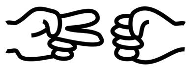

Prev - #21 Validate Date | Table of Contents | Next - #23 99 Bottles of Beer
rpsWinner('rock', 'paper') → 'player2'

Rock, paper, scissors is a popular hand game for two players. The two players simultaneously choose one of the three possible moves and determine the winner of the game: rock beats scissors, paper beats rock, and scissors beats paper. This exercise involves determining a game’s outcome given the moves of the two players.
Exercise Description
Write a rpsWinner() function with
parameters player1 and player2.
These parameters are passed one of the strings 'rock',
'paper', or 'scissors'
representing that player’s move. If this results in player 1 winning, the
function returns 'player one'. If this results in
player 2 winning, the function returns 'player two'.
Otherwise, the function returns 'tie'.
These Python assert statements stop
the program if their condition is False. Copy them
to the bottom of your solution program. Your solution is correct if the following
assert statements’ conditions are all True:
assert rpsWinner('rock', 'paper') == 'player two'
assert rpsWinner('rock', 'scissors') == 'player one'
assert rpsWinner('paper', 'scissors') == 'player two'
assert rpsWinner('paper', 'rock') == 'player one'
assert rpsWinner('scissors', 'rock') == 'player two'
assert rpsWinner('scissors', 'paper') == 'player one'
assert rpsWinner('rock', 'rock') == 'tie'
assert rpsWinner('paper', 'paper') == 'tie'
assert rpsWinner('scissors', 'scissors') == 'tie'
Try to write a solution based on the information in this description. If you still have trouble solving this exercise, read the Solution Design and Special Cases and Gotchas sections for additional hints.
Prerequisite concepts: Boolean operators, elif
statements
Solution Design
Similar to the solutions for Exercise #20, “Leap Year” and #21,
“Validate Date”, the solution for this exercise is a set of if-elif-else
statements. The player1 parameter contains a string
of the first player’s move and the player2 parameter
contains a string of the second player’s move. These strings will be one of 'rock', 'paper', and 'scissors'. You’ll want to use comparison operators to
check the value of both players and join them with an and
operator. For example, the expression player1 == 'rock'
evaluates to True if the first player went with
rock, and the expression player2 == 'paper'
evaluates to True if the second player went with
paper. This means that in the expression player1 == 'rock'
and player2 == 'paper' evaluates to True if
both sides of the and operator evaluated to True. In this case, the second player is the winner and
the function should return 'player2'.
Special Cases and Gotchas
You can check if the player1 parameter
equals the player2 parameter at the start of the
function and immediately return 'tie' in that case.
Now try to write a solution based on the information in the previous sections. If you still have trouble solving this exercise, read the Solution Template section for additional hints.
Solution Template
Try to first write a solution from scratch. But if you have difficulty, you can use the following partial program as a starting place. Copy the following code from https://invpy.com/rockpaperscissors-template.py and paste it into your code editor. Replace the underscores with code to make a working program:
def rpsWinner(move1, move2):
# Check all six possible combinations with a winner and return it:
if move1 == 'rock' and move2 == 'paper':
return 'player two'
elif ____ == 'rock' and move2 == 'scissors':
return ____
____ move1 == 'paper' and ____ == 'scissors':
return ____
____ ____ == 'paper' and move2 == 'rock':
return ____
____ move1 == 'scissors' and ____ == 'rock':
return ____
____ ____ == 'scissors' and ____ == 'paper':
return 'player one'
# For all other combinations, it is a tie:
____:
return ____
The complete solution for this exercise is given in Appendix A and https://invpy.com/rockpaperscissors.py. You can view each step of this program as it runs under a debugger at https://invpy.com/rockpaperscissors-debug/.
Prev - #21 Validate Date | Table of Contents | Next - #23 99 Bottles of Beer